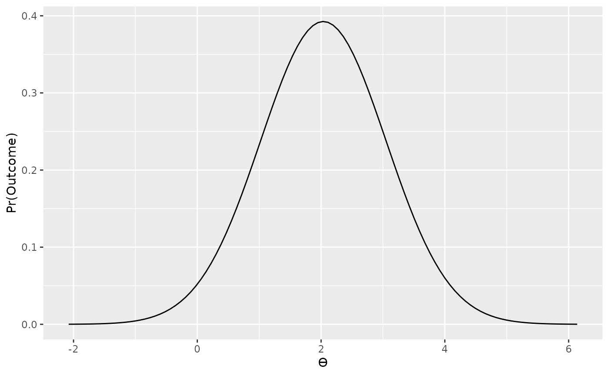
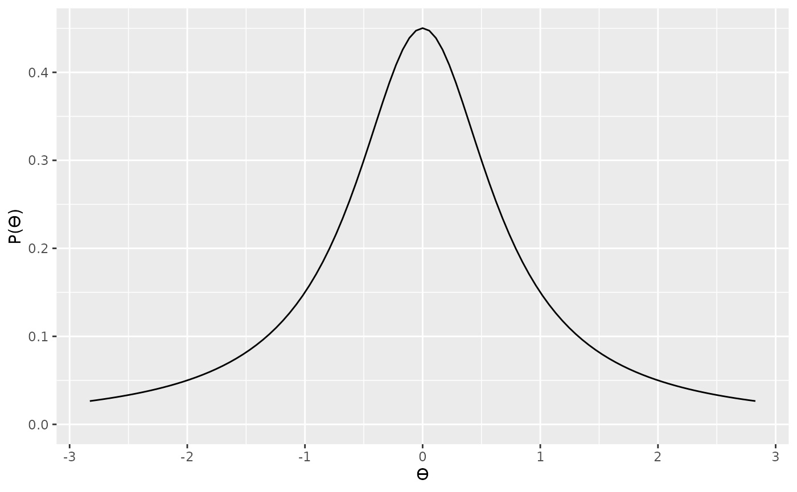
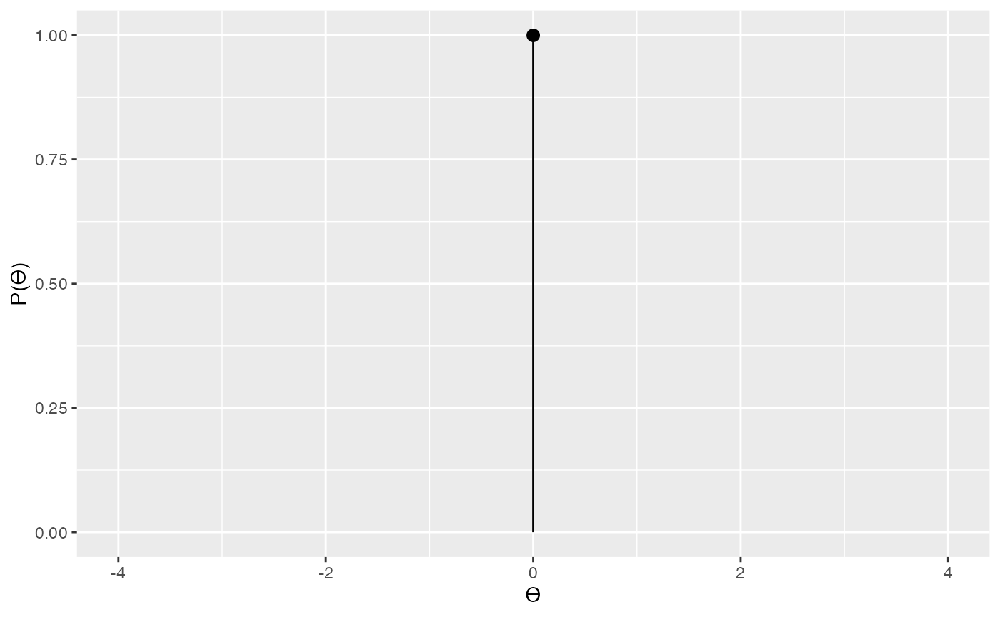
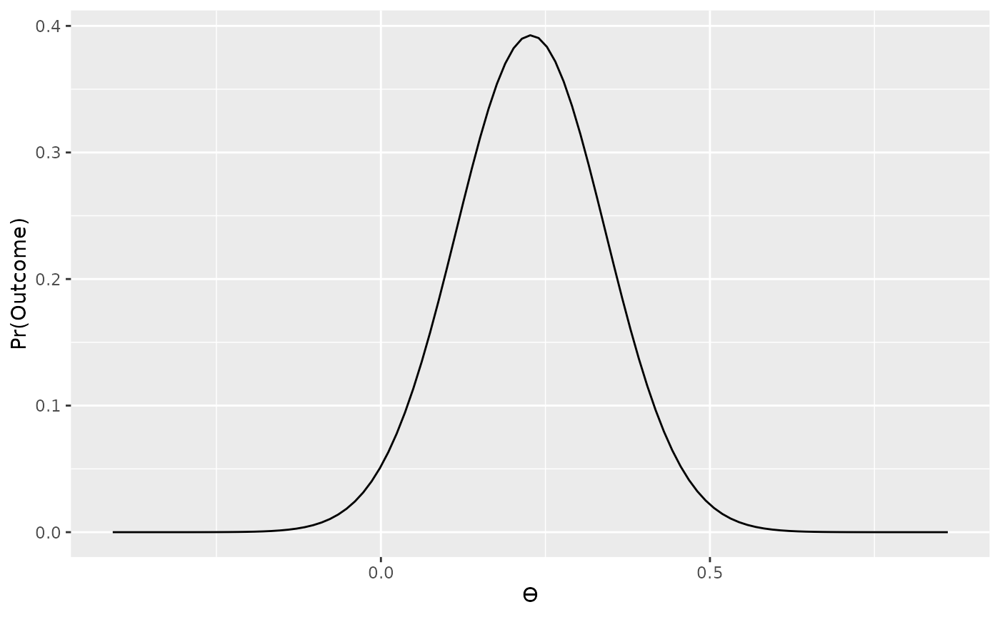
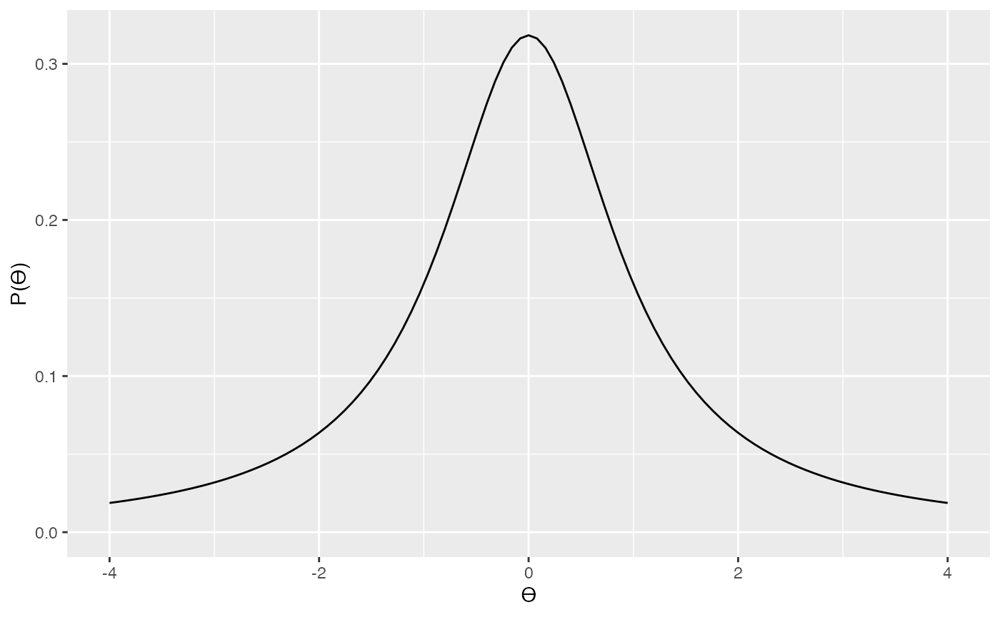
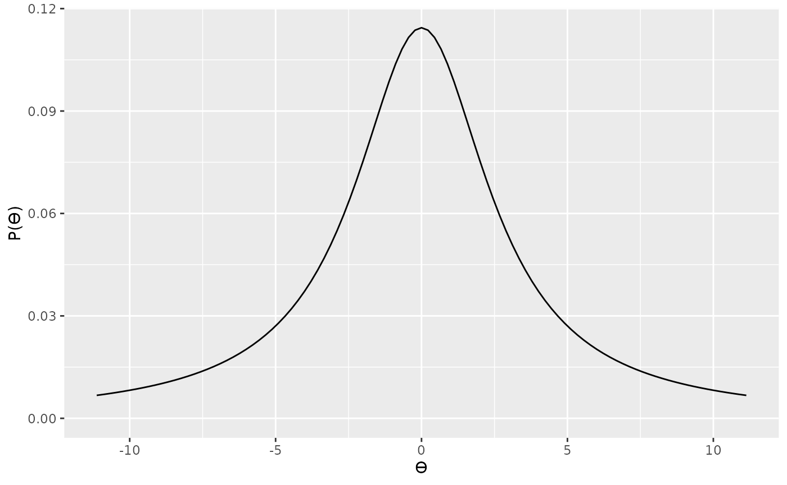
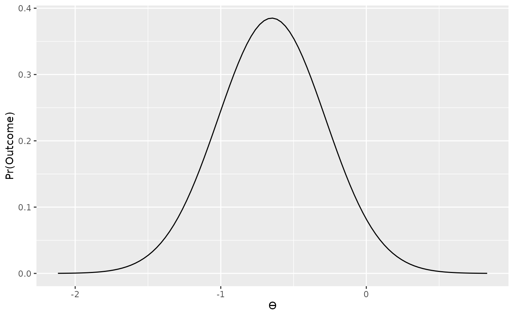

In this vignette we’ll cover how to replicate the results of the default t-tests developed Rouder, Speckman, Sun, & Morey (2009). We’ll cover both one-sample/paired t-tests and independent samples t-tests, and we’ll cover how specify the models both in terms of the t statistic and in terms of Cohen’s d.
One-sample t-tests are already covered in the basic usage vignette, so the example presented here is simply a repeat of that example. However, we’ll change the order of presentation around a bit so that the relationship between the one-sample and independent samples models are a little clearer.
We’ll start with an example from Rouder et al. (2009), in which they analyse the results if a one sample t-test. Rouder et al. (2009) report a t statistic of 2.03, from a sample size of 80. The sampling distribution of the t statistic, when the null hypothesis is false is the noncentral t-distribution distribution. Therefore, we can use this fact to construct a likelihood function for our t value from the noncentral t-distribution. For this, we’ll need two parameters—the t value itself, and the degrees of freedom. In the one-sample case, the degrees of freedom will just be N - 1.
t <- 2.03
n <- 80
data_model <- likelihood("noncentral_t", t = t, df = n - 1)
plot(data_model)
From plotting our likelihood function we can see that values of t at our observation (t = 2.03) and most consistent without our observation while more extreme values of t (e.g., t = -2, or t = 6) are less consistent without our observed data. This is of course, as we would expect.
Now that we’ve defined our likelihood, the next thing to think about is the prior. Rouder et al. (2009) provide a more detailed justification for their prior, so we won’t go into that here; however, their prior is based on the Cauchy distribution. A Cauchy distribution is like a very fat tailed t distribution (in fact, it is a very fat tailed t distribution). We can see an example of a standard Cauchy distribution below.
The Cauchy distribution can be scaled so that it is wider or narrow. You might want to choose a scale parameter based on the range of t values that your theory prediction. For example, here is a slightly narrower Cauchy distribution.

Although scaling the prior distribution by our theoretical predictions makes sense, we also need to factor in another thing—sample size. Because of how the t statistic is calculated (\(t = \frac{\mu}{\sigma/\sqrt{n}}\)), we can see that t statistics are also dependent on sample size. That is, for any given effect size (standardized mean difference), the corresponding t value will be a function of sample size—or more, specifically, the square root of the sample size. That is, for a given underlying true effect size, when we have a large sample size we can expect to see larger values of t that if we have a small sample size. Therefore, we should also scale our prior by the square root of the sample size. In the specification below, we’re specifying a standard Cauchy, but further scaling this by \(\sqrt{n}\).
For our null we’ll use a point located at 0.

Now we can proceed to compute the Bayes factor in the standard way.
bf_onesample_1 <- integral(data_model * alt_prior) / integral(data_model * null_prior)
summary(bf_onesample_1)
#> Bayes factor
#> Using the levels from Wagenmakers et al (2017)
#> A BF of 0.6421 indicates:
#> Anecdotal evidenceIn the preceding example, we’ve taken account of the fact that the same underlying effect size will produce different values of t depending on the sample, and we’ve scaled our prior accordingly. However, we could also apply the scaling at the other end by re-scaling our likelihood. The bayesplay package contains two additional noncentral t likelihoods that have been rescaled. The first of the these is the noncentral_d likelihood. This is a likelihood based on the sample distribution of the one-sample/paired samples Cohen’s d. This is calculated simply as \(d = \frac{\mu_{\mathrm{diff}}}{\sigma_{\mathrm{diff}}}\). Alternatively, we can conver the observed t value by dividing it by \(\sqrt{n}\). The noncentral_d likelihood just takes this effect size and the sample size are parameters.
d <- t / sqrt(n)
data_model2 <- likelihood("noncentral_d", d = d, n = n)
plot(data_model2)
Now that we’ve applied our scaling to the likelihood, we don’t need to apply this scaling to the prior. Therefore, if we wanted to use the same prior as the preceding example, we’ll have a scale value of 1, rather than 1 * sqrt(n).

We can re-use our null prior from before and calculate the Bayes factor the same way as before.
bf_onesample_2 <- integral(data_model2 * alt_prior2) / integral(data_model2 * null_prior)
summary(bf_onesample_2)
#> Bayes factor
#> Using the levels from Wagenmakers et al (2017)
#> A BF of 0.6421 indicates:
#> Anecdotal evidenceAs expected, the two results are identical.
Rouder et al. (2009) also provide an extension of their method to the two sample case, although they do not provide a worked example. Instead, we can generate our own example and directly compare the results from the bayesplay package with the results from the BayesFactor package.
For this example, we’ll start by generating some data from an independent samples design.
First, let us see the results from the BayesFactor package.
BayesFactor::ttestBF(x = group1, y = group2, paired = FALSE, rscale = 1)Bayes factor analysis
--------------
[1] Alt., r=1 : 0.9709424 ±0%
Against denominator:
Null, mu1-mu2 = 0
---
Bayes factor type: BFindepSample, JZSAs with the one-sample case, we can run the analysis in the bayesplay package using either the t statistic or the Cohen’s d. We’ll start by running the analysis using the t statistic. The easiest way to do this, is to simply use the t.test() function in R.
t_result <- t.test(x = group1, y = group2, paired = FALSE, var.equal = TRUE)
t_result
#>
#> Two Sample t-test
#>
#> data: group1 and group2
#> t = -1.7922, df = 29, p-value = 0.08354
#> alternative hypothesis: true difference in means is not equal to 0
#> 95 percent confidence interval:
#> -21.411872 1.411872
#> sample estimates:
#> mean of x mean of y
#> 25 35From this output we need the t statistic itself, and the degrees of freedom.
t <- t_result$statistic
t
#> t
#> -1.792195
df <- t_result$parameter
df
#> df
#> 29With the t, and df value in hand, we can specify our likelihood using the same noncentral t distribution as the one sample case.
data_model3 <- likelihood("noncentral_t", t = t, df = df)As with the one-sample case, a Cauchy prior is used for the alternative hypothesis. Again, this will need to be appropriately scaled. In one sample case we scaled it by \(\sqrt{n}\). In the two-sample case, however, we’ll scale it by \(\sqrt{\frac{n_1 \times n_2}{n_1 + n_2}}\)
alt_prior3 <- prior("cauchy", location = 0, scale = 1 * sqrt((n1 * n2) / (n1 + n2)))
plot(alt_prior3)
We’ll use the same point null prior as before, and then compute the Bayes factor in the usual way.
bf_independent_1 <- integral(data_model3 * alt_prior3) / integral(data_model3 * null_prior)
summary(bf_independent_1)
#> Bayes factor
#> Using the levels from Wagenmakers et al (2017)
#> A BF of 0.9709 indicates:
#> Anecdotal evidenceAppropriately scaling our Cauchy prior can be tricky, so an alternative is instead, as before, to scale our likelihood. The bayesplay package contains a likelihood that is appropriate for independent samples Cohen’s d, the noncentral_d2 likelihood. To use this, we’ll need the Cohen’s d value, and the two sample sizes.
For independent samples designs the Cohen’s d is calculated as follows:
\[d = \frac{m_1 - m2}{s_\mathrm{pooled}},\]
where \(s_\mathrm{pooled}\) is given as follows:
\[s_\mathrm{pooled} = \sqrt{\frac{(n_1 - 1)s^2_1 + (n_2 - 1)s^2_2}{n_1 + n_2 -2}}\]
This is fairly straightforward to calculate, as shown below.
m1 <- mean(group1)
m2 <- mean(group2)
s1 <- sd(group1)
s2 <- sd(group2)
md_diff <- m1 - m2
sd_pooled <- sqrt((((n1 - 1) * s1^2) + ((n2 - 1) * s2^2)) / (n1 + n2 - 2))
d <- md_diff / sd_pooled
d
#> [1] -0.6441105However, it can also be obtained from the effsize package using the following syntax.
effsize::cohen.d(group1, group2, paired = FALSE, hedged.correction = FALSE)With the d value in hand, we can how specify a new likelihood.
data_model4 <- likelihood("noncentral_d2", d = d, n1 = n1, n2 = n2)
data_model4
#> Likelihood
#> Family
#> noncentral_d2
#> Parameters
#> d: -0.644110547740848
#> n1: 15
#> n2: 16
#>
plot(data_model4)
Because we’ve used the appropriately scaled noncentral t likelihood, the noncentral_d2, we no longer need to scale the Cauchy prior.
And we can now calculate the Bayes factor in the usual way.
bf_independent_2 <- integral(data_model4 * alt_prior4) / integral(data_model4 * null_prior)
summary(bf_independent_2)
#> Bayes factor
#> Using the levels from Wagenmakers et al (2017)
#> A BF of 0.9709 indicates:
#> Anecdotal evidenceAgain, we obtain the same result as the BayesFactor package.
Rouder, J. N., Speckman, P. L., Sun, D., & Morey, R. D. (2009). Bayesian t tests for accepting and rejecting the null hypothesis. Psychonomic Bulletin & Review, 20, 225–237. https://doi.org/10.3758/PBR.16.2.225